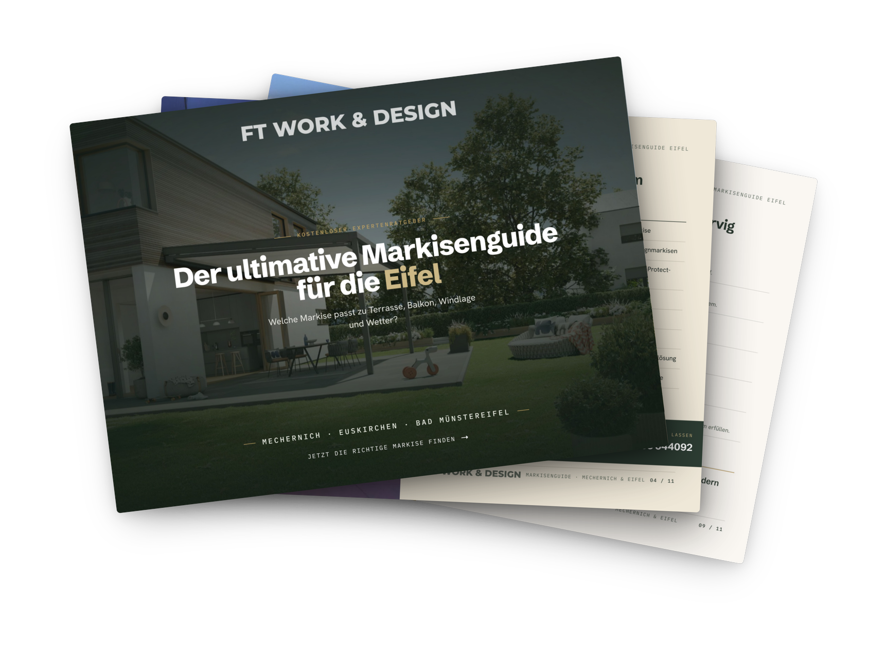
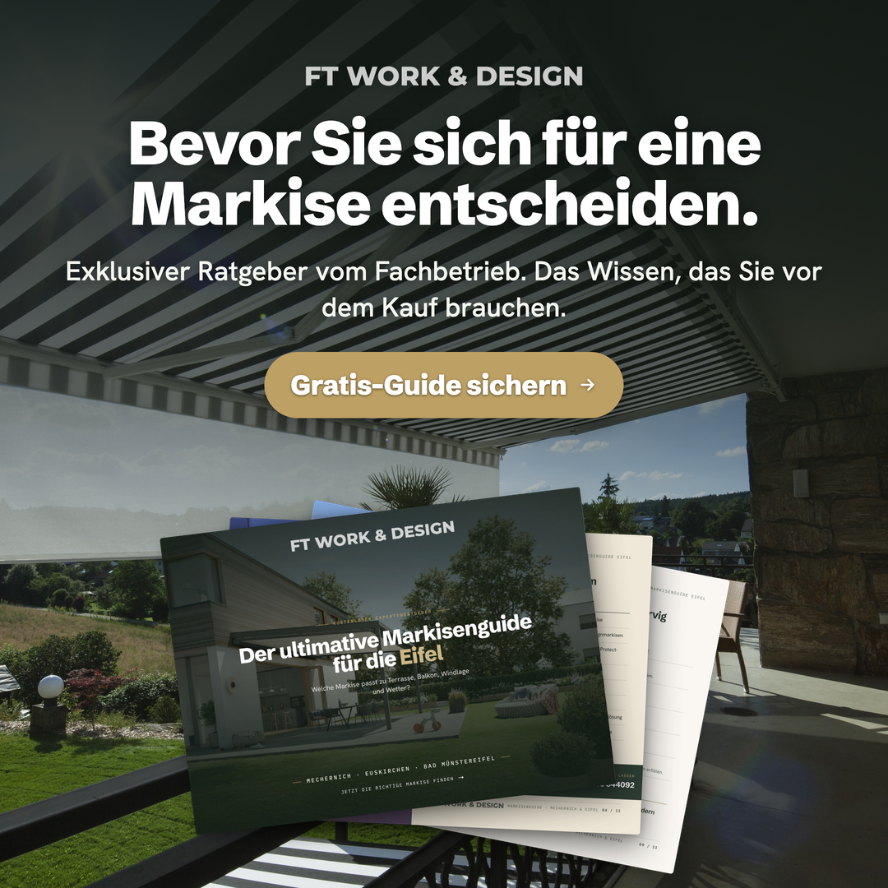
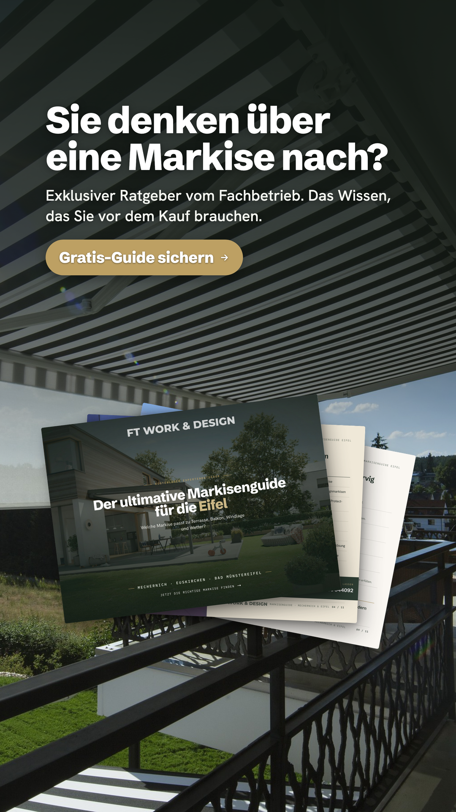
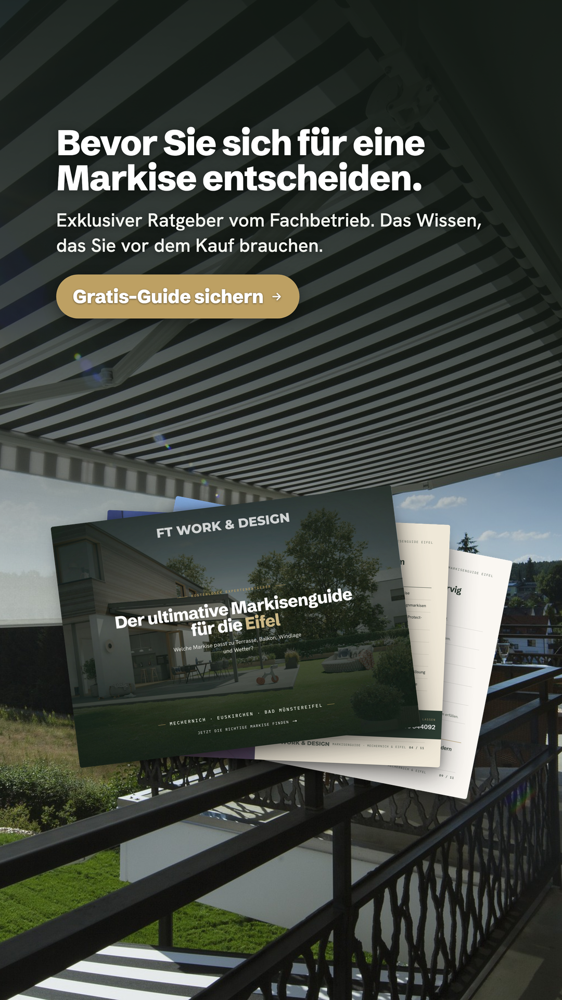
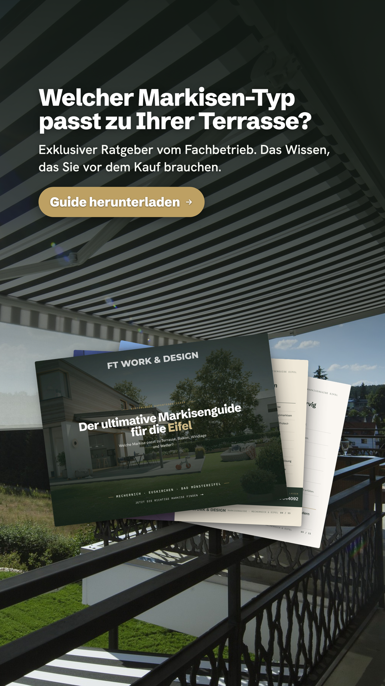
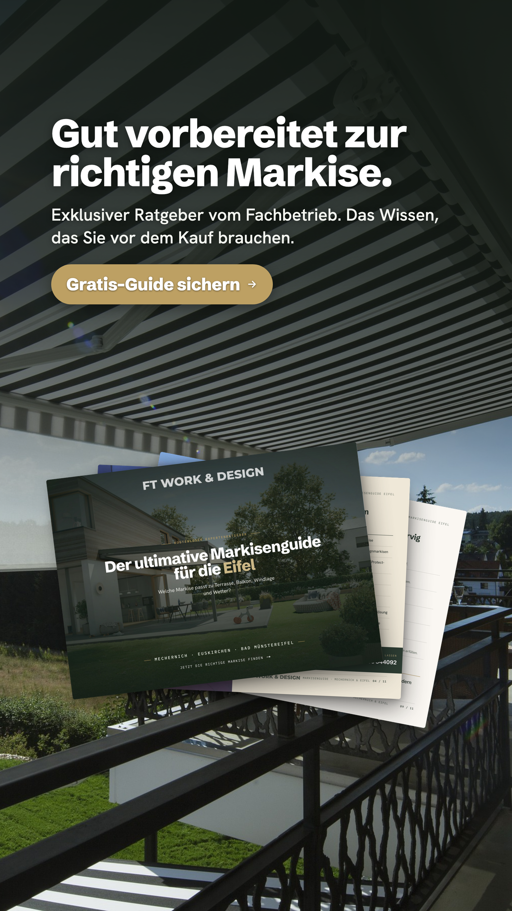
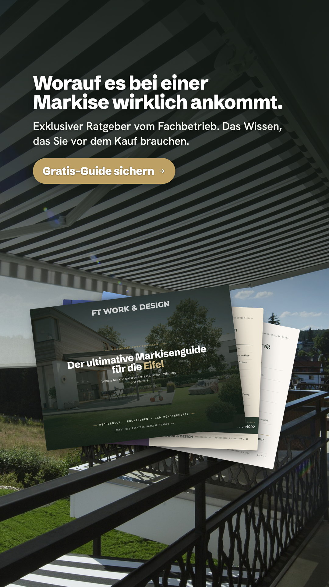
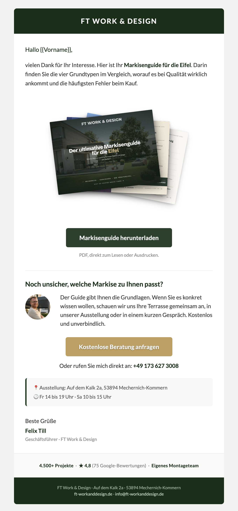
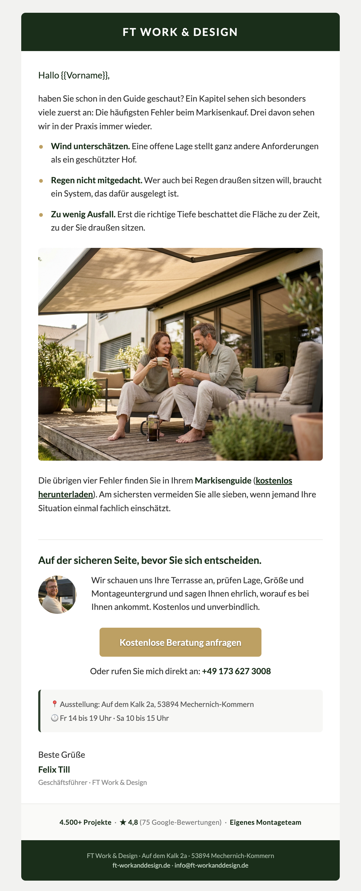
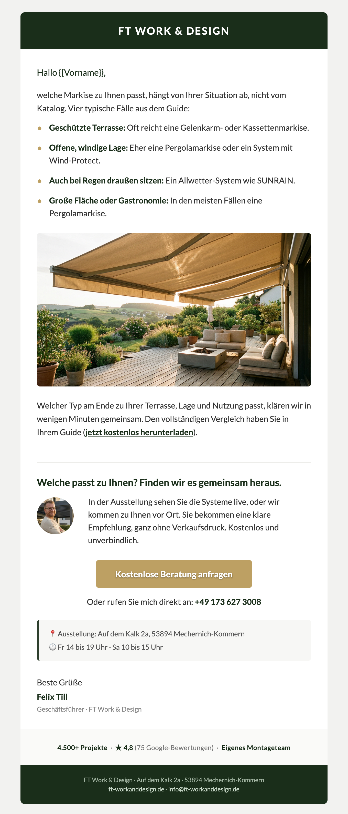

Eine Kampagne, drei Bausteine: ein kostenloser Guide als Köder, Meta-Anzeigen, die ihn bewerben, und eine E-Mail-Automation, die aus Downloads Beratungstermine macht.
Der „ultimative Markisenguide für die Eifel". Vier Grundtypen im Vergleich, worauf es bei Qualität ankommt und die häufigsten Fehler beim Kauf. Das ist der Wert, den Interessenten gegen ihre Kontaktdaten bekommen.

11 Seiten, im Querformat gestaltet, mit echten Projektfotos und einer Entscheidungs-Matrix. Positioniert FT Work & Design vom ersten Kontakt an als Fachbetrieb.
Guide ansehen (PDF)Fünf Copy-Konzepte, die Menschen ansprechen, die gerade über eine Markise nachdenken. Jede Anzeige zeigt das Produkt und den Guide und führt auf den kostenlosen Download. Im Feed-Format (1:1) und für Stories/Reels (9:16).






Sobald jemand den Guide anfordert, startet eine dreiteilige Sequenz über drei Tage. Erst der Download, dann konkreter Mehrwert aus dem Guide, dann der Weg zur kostenlosen Beratung. Jede Mail mit Felix als Absender.


